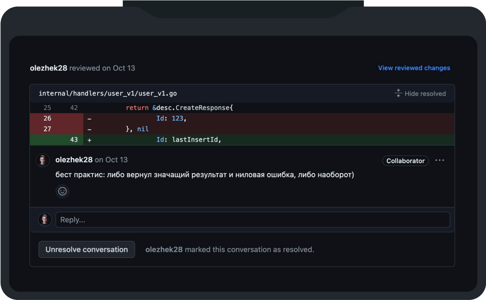
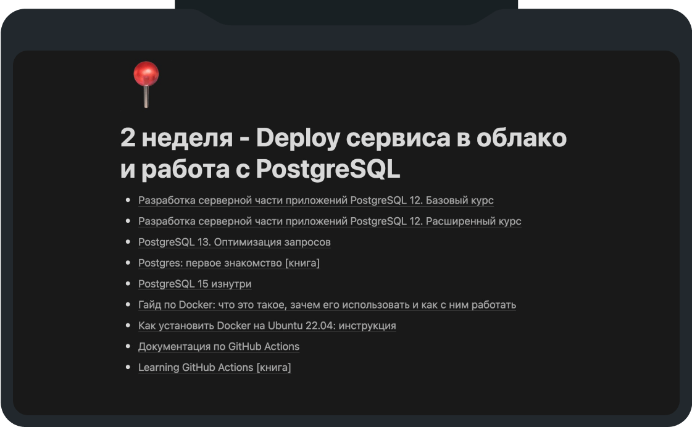
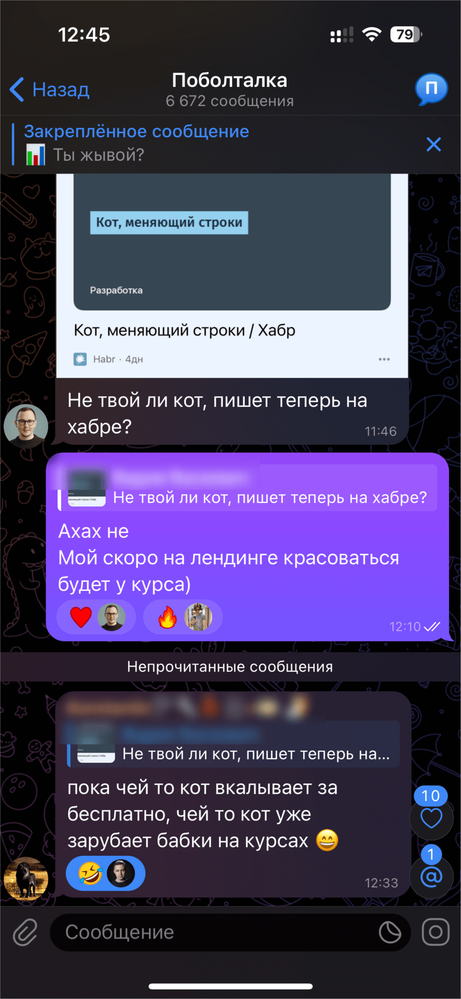
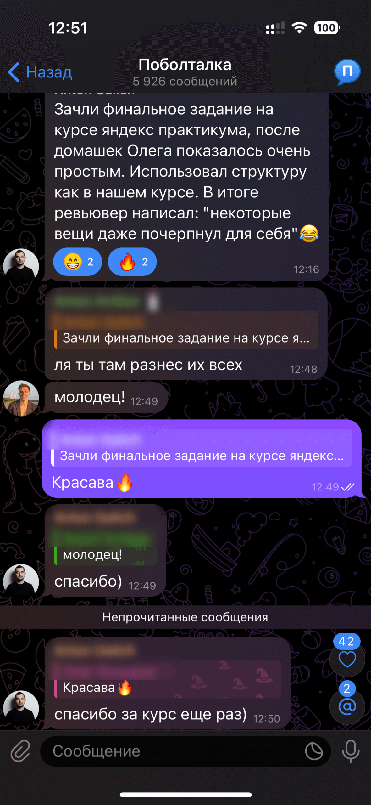

Микросервисы на GO 3.0

Научись разрабатывать высокопроизводительные, масштабируемые микросервисы, как в ВК Yandex OZON СБЕР Тинькофф, и увеличь свои шансы на трудоустройство в BigTech или повышение грейда


Курс адаптирован под частые проблемы backend-a, которые встречаются на работе

Перехожу на Go — хочу быстро адаптироваться и не писать как на старом языке
Узнаешь все необходимое про внутрянку Go и микросервисную архитектуру: HTTP, OpenAPI, gRPC, Kafka, Redis, Postgres, Prometheus, Grafana, Jagger, Elasticsearch, Kibana, Envoy, OpenTelemetry и др., чтобы сменить стек без потери в ЗП и сразу работать на интересных проектах.
Пишу на Go, но застрял в типовых задачах — хочу расти дальше
Узнаешь лучшие практики, нюансы и лайфхаки построения микросервисов, которые применяются в бигтехах, чтобы вырасти из рутины и начать решать сложные инженерные задачи.
Хочу уверенно проходить собесы и повысить свой грейд и зарплату
Напишешь реальный проект из 5 микросервисов, разберёшься как всё взаимодействует между собой и сможешь уверенно отвечать на вопросы по архитектуре и технологиям на собесах в топовые компании.

Вся подкапотная микросервисов в одном курсе
Разработаешь 5 микросервисов, связанных между собой через Kafka и gRPC,
с изоляцией от внешнего мира с помощью Envoy Gateway
Обеспечишь мониторинг сервиса по стандарту OpenTelemetry с юнит-тестами,
чтобы исключить ошибки в работе
Освоишь кеширование данных с помощью Redis
и асинхронное взаимодействие между микросервисами с помощью Kafka
Освоишь работу с PostgreSQL,
напишешь свою платформенную библиотеку, упрощающую разработку
Реализуешь межсервисное взаимодействие,
систему аутентификации и авторизации
На практике научишься применять
архитектурные подходы построения микросервисов
8 недель. 5 микросервисов. Production-ready стек.
gRPC — язык, на котором говорят микросервисы
- Protocol Buffers с нуля — описываем контракт сервиса в ".proto"-файле
- buf — генерируем Go-код одной командой вместо ручной возни с
protoc - Поднимаем gRPC-сервер и клиент — полноценный CRUD для управления данными
- Интерцепторы: перехватываем каждый запрос — логирование, перехват паник и кастомная логика
- gRPC-Gateway + Swagger UI — один сервис, два протокола: REST снаружи, gRPC внутри
- Валидация входных данных — отсекаем невалидные запросы ещё до попадания в бизнес-логику
HTTP — REST API на промышленном уровне
- Chi — самый популярный Go-роутер — маршруты, цепочки middleware, таймауты и корректное завершение работы
- Сначала контракт, потом код — описываем OpenAPI-спецификацию, получаем типизированный сервер с валидацией из коробки через Ogen
- HTTP вызывает gRPC — связываем сервисы между собой: HTTP-фронтенд обращается к gRPC-бэкенду
Go Workspace — мультимодульный проект
- go.work для нескольких сервисов — общие proto-определения, общие зависимости, единый репозиторий
Реализовать 3 микросервиса: OrderService (HTTP), InventoryService (gRPC), PaymentService (gRPC). Связать их через gRPC-клиенты — заказ обращается к складу и платёжке.
Ты с нуля напишешь 3 работающих сервиса на двух протоколах, освоишь кодогенерацию API из контрактов и научишься связывать микросервисы между собой. Это фундамент, на котором строится всё остальное.
Слоистая архитектура — структура, которую поймёт любой разработчик
- API → Service → Repository → Client — чёткое разделение ответственности
- Три модели данных — модель API, доменная модель, модель хранилища: зачем их разделять и как конвертировать между собой
- Инверсия зависимостей — интерфейсы определяет тот, кто использует, а не тот, кто реализует
- Стратегия обработки ошибок — единые ошибки-маркеры на каждом слое, понятная цепочка от базы до клиента
Unit-тесты — от нуля до полного покрытия за 7 шагов
- Первый тест на чистом Go —
testing.T, никаких фреймворков - Табличные тесты — один тест, десять сценариев: описываем входы и ожидаемые результаты
- testify — читаемые проверки вместо ручных
if err != nil - Стабы: подменяем зависимости вручную — простая реализация в памяти вместо реальной базы
- mockery — генерируем моки автоматически — задаём ожидания, проверяем вызовы
- Тесты в Clean Architecture — мокаем репозиторий, тестируем бизнес-логику изолированно
- Параллельные тесты — запускаем тесты одновременно и не ловим гонки
Рефакторинг всех 3 сервисов в Clean Architecture. Unit-тесты с моками на сервисный и API-слой. Покрытие ≥40%.
Код разложен по чётким слоям — бизнес-логика отделена от транспорта и хранилища. Любой новый разработчик откроет проект и сразу поймёт, где что лежит. Тесты с моками ловят баги до продакшена, а не после
Docker — упаковываем сервис в контейнер
- Многоэтапная сборка Docker-образа — 800 МБ Go SDK превращаются в 10 МБ финальный образ
- Запуск не от root — безопасно, как требуют в продакшене
- Docker Compose — база данных, миграции и сервис поднимаются одной командой
- Healthcheck и зависимости — контейнеры стартуют в правильном порядке
PostgreSQL — SQL на Go без боли
- pgx — самый быстрый драйвер для PostgreSQL с пулом соединений (переиспользуем подключения, а не создаём новые на каждый запрос)
- Squirrel — SQL-конструктор — собираем запросы программно, без склейки строк
- Миграции через Goose — версионируем схему базы, накатываем изменения при деплое
- Практические приёмы — получаем ID сразу при вставке, работаем с nullable-полями, избегаем SQL-инъекций
Транзакции — атомарность без компромиссов
- Transaction Manager — оборачиваем несколько операций в транзакцию, не протаскивая объект транзакции через все слои
- Прозрачные транзакции — репозиторий даже не знает, что работает внутри транзакции — всё скрыто в контексте
Поднять PostgreSQL через Docker Compose для OrderService и InventoryService. Написать миграции, заменить хранение в памяти на реальные SQL-запросы. Интегрировать Transaction Manager для атомарного создания заказа
Хранилище в памяти заменено на PostgreSQL. Ты умеешь поднимать инфраструктуру через Docker Compose, делать миграции, писать запросы и проектировать хранилища. Паттерн Transaction Manager — один из самых частых вопросов на собеседованиях
Конфигурация — параметры сервиса без хардкода
- YAML + переменные окружения через cleanenv — один конфиг-файл, переопределения через переменные окружения для каждого стенда
- Профили: local / production / docker — переключаем поведение без изменения кода
DI-контейнер — управление зависимостями без магии
- Ручной DI на Go — создаём зависимости лениво: только когда понадобятся
- Корректное завершение работы — ресурсы закрываются в обратном порядке: что открыли последним — закрываем первым
- Платформенная библиотека — проверка здоровья сервиса, логгер, менеджер закрытия ресурсов: переиспользуемые компоненты для всех сервисов
JSONB — гибкие структуры в PostgreSQL
- JSONB-колонки — храним разнородные данные (характеристики разных типов деталей) в одной колонке без раздувания схемы
- Индексы по JSON — быстрый поиск внутри JSON-структур
Domain-Driven Design — бизнес-логика, которая сама себя защищает
- Сущности с поведением — объекты сами знают свои правила, а не просто хранят данные
- Value Objects — типизированные значения (например, «прочность корпуса»), которые нельзя создать в невалидном состоянии
- Агрегаты — группа связанных объектов с единой точкой входа, которая контролирует целостность данных
- Доменный сервис — проверка совместимости компонентов корабля перед заказом
- Резервирование деталей — Reserve/Release с защитой от невалидных состояний
Внедрить конфигурацию и DI-контейнер во все сервисы. Создать платформенную библиотеку. Реализовать DDD: сущность Part с методами Reserve/Release, Value Objects для свойств компонентов в JSONB, сервис проверки совместимости при заказе
Сервисы конфигурируются через YAML и переменные окружения, зависимости собираются через DI-контейнер, ресурсы корректно освобождаются при завершении. Бизнес-логика защищена доменной моделью — невалидное состояние невозможно создать в принципе. Ты строишь не просто сервисы, а платформу — как это делают в BigTech-компаниях
Apache Kafka — шина событий для микросервисов
- Синхронный и асинхронный продюсер — гарантия доставки каждого сообщения vs максимальная пропускная способность
- Консюмер — читаем поток событий — смещения, партиции, чтение с начала или с конца
- Consumer Groups — горизонтальное масштабирование — несколько экземпляров сервиса делят между собой поток сообщений, автоматически перераспределяя нагрузку
- Обработка сообщений пачками — накапливаем и обрабатываем группой для производительности
- Kafka в Clean Architecture — выделяем слои для асинхронных потоков так же, как для HTTP и gRPC
SELECT FOR UPDATE — блокировки в PostgreSQL
- Блокировка строк при чтении — «заморозить» запись в базе, пока мы с ней работаем, чтобы другой запрос не изменил её параллельно
- Правильный порядок блокировок — всегда блокируем строки в одном и том же порядке, чтобы два запроса не заблокировали друг друга навечно
- Повторная обработка событий без последствий — даже если Kafka доставит сообщение дважды, данные не сломаются
Поднять Kafka. Создать AssemblyService — новый микросервис, который слушает событие оплаты, «собирает корабль» и отправляет событие завершения сборки. OrderService публикует событие при оплате и обновляет статус при получении результата сборки. Блокировка строк для безопасного резервирования деталей.
Полная асинхронная цепочка: заказ → оплата → сборка → обновление статуса. Четвёртый микросервис (AssemblyService) работает через Kafka. Ты освоил событийную архитектуру — именно так обрабатывают миллионы событий в BigTech-компаниях вроде OZON, Яндекса и Тинькофф
Redis — быстрое key-value хранилище
- Базовые операции — простые ключи, хеш-таблицы, хранение структур
- Время жизни ключей (TTL) — данные автоматически удаляются через заданное время: идеально для сессий и кеша
- Распределённая блокировка через Redis — когда несколько экземпляров сервиса должны по очереди работать с общим ресурсом
- Защита от лавины запросов — если тысяча пользователей одновременно запросила одно и то же, в базу уходит только один запрос
- Redis в Clean Architecture — кеширующий слой как отдельный репозиторий
Аутентификация на сессиях — от логина до защиты API
- bcrypt — хешируем пароли правильно — почему md5 и sha256 для паролей использовать нельзя
- Сессии в Redis с временем жизни — создание, проверка, удаление
- gRPC-интерцептор для проверки сессий — список открытых методов, извлечение токена из заголовка
- HTTP middleware для аутентификации — проверяем сессию через IAM, пробрасываем ID пользователя в контекст запроса
- Передача информации о пользователе между сервисами — gRPC metadata для пробрасывания идентификатора через цепочку вызовов
Создать IAM Service — пятый микросервис: Register, Login, Logout, Whoami, GetUser. Пользователи в PostgreSQL, сессии в Redis с ограниченным временем жизни. Добавить HTTP middleware в OrderService и gRPC-интерцептор в InventoryService для проверки сессий через IAM.
Пятый микросервис — полноценный IAM с регистрацией, аутентификацией и хранением сессий в Redis. Каждый запрос проходит проверку — API больше не открыт всему миру. Плюс ты освоил распределённые блокировки и защиту от лавинных запросов — паттерны, которые спрашивают на каждом Senior-собеседовании.
Логирование — от println до Kibana
- Структурированные логи через slog + OpenTelemetry — логи отправляются в единый коллектор телеметрии
- Запись сразу в два места — одновременно в консоль и в Elasticsearch, чтобы видеть логи и локально, и в централизованном хранилище
- Kibana — ищем и анализируем логи всех сервисов в одном интерфейсе
- Устойчивость к сбоям — если Elasticsearch упал, сервис продолжает работать и писать логи в консоль
Метрики — Prometheus и Grafana
- Счётчики, гистограммы и другие типы метрик — считаем количество запросов, замеряем время ответа, отслеживаем текущую нагрузку
- Автоматический сбор метрик gRPC — подключается в одну строку, сразу видим latency и количество ошибок
- Prometheus — собирает метрики со всех сервисов через единый коллектор
- Grafana-дашборды — красивые графики бизнес-метрик: заказы, выручка, время сборки
Распределённый трейсинг — видим путь запроса насквозь
- Сквозной идентификатор запроса — один trace-id проходит через все сервисы, позволяя восстановить полный путь
- Автоматический сбор трейсов для gRPC — подключается без изменения бизнес-кода
- Добавляем бизнес-контекст к трейсам — видим не только «запрос прошёл», но и «какой заказ, какой пользователь»
- Jaeger — визуализация полного пути запроса через все сервисы на одном таймлайне
- Инструментация Redis — подключаем трейсы, метрики и логи для каждого вызова кеша через систему хуков
Развернуть полный стек наблюдаемости: коллектор телеметрии, Elasticsearch + Kibana, Prometheus + Grafana, Jaeger. Настроить логи всех сервисов в Kibana. Бизнес-метрики (заказы, выручка) в Grafana. Трассировка полного пути запроса через Order → Inventory → Payment. Вынести инструменты наблюдаемости в платформенную библиотеку.
Полноценная система наблюдаемости: Grafana с метриками, Kibana с логами, Jaeger с трейсами. Ты видишь каждый запрос от входа до ответа через все сервисы. Это уровень, который отличает Middle от Senior.
Контейнеризация и Nginx — всё в Docker, балансировка нагрузки
- Многоэтапная сборка Docker-образа для каждого сервиса — сначала компилируем, затем берём только бинарник в минимальный образ
- Docker Compose для всей системы — 5 сервисов + вся инфраструктура поднимаются одной командой
- Nginx как балансировщик — запросы равномерно распределяются между репликами OrderService
- Горизонтальное масштабирование — запускаем несколько копий сервиса, Nginx сам находит их по имени
Паттерны отказоустойчивости — чтобы сервис выжил в продакшене
- Rate Limiter — ограничиваем количество запросов в секунду, чтобы сервис не захлебнулся под нагрузкой
- Retry с нарастающей задержкой — клиент автоматически повторяет запрос при временных сбоях, каждый раз ожидая чуть дольше (плюс случайный разброс, чтобы все клиенты не повторили одновременно)
- Circuit Breaker — если сервис начал падать, автоматически прекращаем к нему обращаться, даём восстановиться, затем аккуратно проверяем: заработал ли
- Распределённый Rate Limiter через Redis — единый лимит на все копии сервиса, настройка лимитов отдельно для каждого метода, если Redis недоступен — пропускаем запросы, а не блокируем
Нагрузочное тестирование — проверяем, что всё работает под давлением
- vegeta — заливаем HTTP-трафиком, замеряем время ответа и пропускную способность
- ghz — то же самое для gRPC, проверяем rate limiter под реальной нагрузкой
Контейнеризировать все сервисы. Собрать единый Docker Compose со всей инфраструктурой. Настроить Nginx для балансировки OrderService на 3 реплики. Реализовать распределённый Rate Limiter через Redis — единый лимит на все экземпляры. Провести нагрузочное тестирование
Микросервисная система полностью собрана — от API до мониторинга, от аутентификации до балансировки нагрузки. 5 сервисов в Docker-контейнерах за Nginx, распределённый rate limiter защищает от перегрузки, нагрузочные тесты подтверждают работоспособность. Это готовый проект для портфолио и уверенный ответ на любой вопрос собеседования про микросервисы.
Изучаем, что bigtech-компании требуют в вакансиях
Вся программа состоит из тем, которые точно пригодятся в работе и которые часто спрашивают на собеседовании
Вакансия Ozon Tech
Вакансия Wildberries
Вакансия Aviasales
 Скриншоты вакансий сделаны на hh.ru
Скриншоты вакансий сделаны на hh.ru
Как всё устроено по шагам

Смотришь видеоуроки и ходишь на онлайн-встречи с разборами практических заданий и вопросов
Каждую неделю будет открываться несколько уроков. Будешь изучать микросервисы лапку за лапкой, без полыхающих дедлайнов, ну и еще кое-чего:)

Делаешь практическое задание с упором на реальную практику
Задания полностью моделируют бизнес-таски в BigTech-компаниях. Короче, Коткинс сделал все, чтобы ты был готов к настоящей работе

Получаешь подробный фидбек по практическому заданию и эталонное решение от Олега*
Кожаные скрупулезно проверят практическое задание и покажут ошибки. А ещё отправят видео с идеальным решением, как бы они сами писали код в этом кейсе — с разбором всех нюансов и типичных ошибок

* На тарифе с обратной связью по практическим заданиям
Читаешь допматериалы
Забугорные курсы, статейки, видосики — короче, не заскучаешь!





А еще у нас полный комфортик в чатике и на лекциях:)
Обсуждаем задания и болтаем за жизнь без духоты и формальностей
У нас учатся парни и крутые гошницы, и мы просто кайфуем в течение всего потока:)
Домашние задания по неделям
Реализовать 3 микросервиса: OrderService (HTTP), InventoryService (gRPC), PaymentService (gRPC). Связать их через gRPC-клиенты — заказ обращается к складу и платёжке.
Рефакторинг всех 3 сервисов в Clean Architecture. Unit-тесты с моками на сервисный и API-слой. Покрытие ≥40%.
Поднять PostgreSQL через Docker Compose для OrderService и InventoryService. Написать миграции, заменить хранение в памяти на реальные SQL-запросы. Интегрировать Transaction Manager для атомарного создания заказа
Внедрить конфигурацию и DI-контейнер во все сервисы. Создать платформенную библиотеку. Реализовать DDD: сущность Part с методами Reserve/Release, Value Objects для свойств компонентов в JSONB, сервис проверки совместимости при заказе
Поднять Kafka. Создать AssemblyService — новый микросервис, который слушает событие оплаты, «собирает корабль» и отправляет событие завершения сборки. OrderService публикует событие при оплате и обновляет статус при получении результата сборки. Блокировка строк для безопасного резервирования деталей.
Создать IAM Service — пятый микросервис: Register, Login, Logout, Whoami, GetUser. Пользователи в PostgreSQL, сессии в Redis с ограниченным временем жизни. Добавить HTTP middleware в OrderService и gRPC-интерцептор в InventoryService для проверки сессий через IAM.
Развернуть полный стек наблюдаемости: коллектор телеметрии, Elasticsearch + Kibana, Prometheus + Grafana, Jaeger. Настроить логи всех сервисов в Kibana. Бизнес-метрики (заказы, выручка) в Grafana. Трассировка полного пути запроса через Order → Inventory → Payment. Вынести инструменты наблюдаемости в платформенную библиотеку.
Контейнеризировать все сервисы. Собрать единый Docker Compose со всей инфраструктурой. Настроить Nginx для балансировки OrderService на 3 реплики. Реализовать распределённый Rate Limiter через Redis — единый лимит на все экземпляры. Провести нагрузочное тестирование
Результат курса — микросервисная ракета, как на проде
API на HTTP и gRPC, PostgreSQL, Kafka и Redis, логирование, метрики, трассировка, алерты, авторизация, Ngix. Все через код, в одной архитектуре без теории ради теории

Отвечает за аутентификацию и авторизацию
Пользователи хранятся в PostgreSQL, сессии — в Redis. Проверяет валидность сессии на входе через Envoy и предоставляет информацию о пользователе другим сервисам
Обрабатывает оплату заказов
Принимает gRPC-запросы от Order, не имеет своей базы
Обрабатывает событие «оплата прошла», ждёт 10 секунд и отправляет событие «ракета собрана»
Консьюмер Kafka. Симулирует асинхронную обработку заказов
Центральный сервис для оформления заказов
Общается с Inventory и Payment по gRPC, пишет данные в PostgreSQL, публикует события в Kafka. Доступен по HTTP
Связывает микросервисы асинхронно
Служит для передачи событий от Order → Assembly → Notification. Настроен в KRaft-режиме без ZooKeeper
Маршрутизатор и точка входа в систему
Принимает HTTP/gRPC-запросы, перенаправляет их в нужный сервис, валидирует сессию через IAM. Всё взаимодействие снаружи идёт только через него
Полная система наблюдаемости как в продакшене
OpenTelemetry Collector — собирает логи, метрики, трейсы. Prometheus — хранит метрики. Grafana — отображает метрики. Jaeger — визуализирует трейсы. Kibana — визуализирует логи
Хранит информацию о доступных деталях
gRPC-сервис. Позволяет Order’у проверять существование деталей при оформлении заказа
- IAM Service — отвечает за аутентификацию и авторизацию
- Пользователи хранятся в PostgreSQL, сессии — в Redis. Проверяет валидность сессии на входе через Envoy и предоставляет информацию о пользователе другим сервисам
- Payment Service — обрабатывает оплату заказов
- Принимает gRPC-запросы от Order, не имеет своей базы
- Assembly Service — обрабатывает событие «оплата прошла», ждёт 10 секунд и отправляет событие «ракета собрана»
- Консьюмер Kafka. Симулирует асинхронную обработку заказов
- Order Service — центральный сервис для оформления заказов
- Общается с Inventory и Payment по gRPC, пишет данные в PostgreSQL, публикует события в Kafka. Доступен по HTTP
- Kafka — связывает микросервисы асинхронно
- Служит для передачи событий от Order → Assembly → Notification. Настроен в KRaft-режиме без ZooKeeper
- Nginx — маршрутизатор и точка входа в систему
- Принимает HTTP/gRPC-запросы, перенаправляет их в нужный сервис, валидирует сессию через IAM. Всё взаимодействие снаружи идёт только через него
- Observability — полная система наблюдаемости как в продакшене
- OpenTelemetry Collector — собирает логи, метрики, трейсы. Prometheus — хранит метрики. Grafana — отображает метрики. Jaeger — визуализирует трейсы. Kibana — визуализирует логи
- Inventory Service — хранит информацию о доступных деталях
- gRPC-сервис. Позволяет Order’у проверять существование деталей при оформлении заказа


Все, как на работе — контрактное программирование, DI, тесты, docker-compose, observability. Это сложный проект, где придётся много писать руками, разбираться в зависимостях и реально прокачиваться как инженер
Записаться на курсАвтор курса — Олег Козырев

Участники оценивают качество материала


А ещё честно рассказывают о курсе на камеру


Реальные истории участников

До курса работа сводилась к банальному «перекладыванию данных из базы в JSON». Был затык, роста не чувствовал. Я понимал, что одного синтаксиса языка мало, чтобы стать Senior-ом, нужна архитектура, но боялся сложных проектов с нуля - думал, всё сломается под нагрузкой

Делал объёмные ДЗ, получил тонну фидбэка и поддержки. Теперь знаю, как писать код по уму и внедряю OpenAPI на работе.

До курса я уже год-полтора писал на Go, изучал язык по open source-материалам — канал Николая Тузова и другие. Хотел научиться писать код, за который не стыд...

Начну с того, что наша команда получила проект от аутсорс-компании в нерабочем состоянии, который нам пришлось приводить к жизнеспособному состоянию...

Изучил всю архитектуру с нуля и сэкономил месяцы самостоятельного обучения языку. Несколько подходов я забрал к себе на существующие проекты на работе, использую.

Расскажу вкратце свою историю. До того как приобрел курс по микросервисам у Олега, я писал в основном на PHP и лишь делал небольшие фиксы в проектах на...

Эффективно попрактиковался на Go, поработал с актуальными библиотеками и объединил разрозненные знания на полноценном проекте.

Меня зовут Антон Артиков, я работаю в компании Авито. На момент старта моего участия в курсе Олега я уже работал в компании, куда пришел будучи Python...

На Go я начала писать с ноября 2023 года, а на курс Олега попала в сентябре-октябре 2024, то есть с примерно годовым опытом работы. Решила пойти на курс, чтобы....

Я залетел на осенний поток курса Олега Козырева по микросервисам в 2024 году. На тот момент я работал в маленькой компании, где было около 6 разработчик...

Всё началось на последнем курсе магистратуры. Несмотря на IT-направление, я всё ещё оставался без работы. После бакалавриата решил стать Android...
*Истории участников приведены в качестве иллюстрации. Результат зависит от опыта, активности и решений работодателей. Курс не гарантирует трудоустройство, повышение грейда или рост дохода.
История / Алексея
До курса работа сводилась к банальному «перекладыванию данных из базы в JSON». Был затык, роста не чувствовал. Я понимал, что одного синтаксиса языка мало, чтобы стать Senior-ом, нужна архитектура, но боялся сложных проектов с нуля - думал, всё сломается под нагрузкой.
На курсе закрыл пробелы в бекенд-технологиях и посмотрел, как реально устроено Go в крупных проектах. Было круто узнать, как строятся микросервисы, разносить всё по папкам и настраивать тестирование - пилили и юнит, и интеграционные тесты сами. Сначала сомневался, хватит ли сил после основной работы, но процесс построен круто: тратил 6–8 часов в неделю - ни разу не перегорел.
Из практики: подключал Postgres и MongoDB, собирал интеграции с Telegram, прикручивал Kafka и Redis, оформлял систему с нуля. Раньше я изучал отдельные инструменты по видео, но не понимал, как собрать их в одну надежную систему. Здесь же я увидел всю цепочку общения сервисов через Kafka. А когда сам настроил мониторинг, наконец понял, как траблшутить и объяснять коллегам, почему система тормозит.
Код-ревью - отдельный кайф: ментор грамотно разбирал каждый мой “говнокод”, подробно комментировал, объяснял не только как лучше сделать, но и почему так правильно. На созвонах реально работают: разбирают страхи, собесы, помогают прокачать уверенность.
В итоге - реальный боевой опыт, закрытые пробелы, структурированное понимание архитектуры Go-проектов. Я наконец спроектировал надежную систему на работе, чувствую уверенность в своих силах и готов к повышению до Senior, чтобы самому решать, как будет работать проект. Рекомендую курс тем, кто хочет не просто послушать про тренды, а реально применить всё на практике»
История / Валеры
Go - мой первый язык. Изучал сам через интернет и бесплатные курсы со Степика 😅. По ЗП сейчас около 200. Работаю в одной компании с самого начала, и тут беда - технологий практически нет, а хочется роста, а не просто перекладывать данные из базы в ответ.
От курса хотел получить знания современных технологий, систематизировать свои обрывочные знания в нормальную архитектуру и обязательно работать с ментором, чтобы получать фидбек по коду 😁
Материал понятный, ДЗ объёмные и интересные (подгорит не раз). Сейчас на работу затаскиваю OpenAPI и нормальный мониторинг, чтобы понимать, почему система может тормозить. Понравилось общение - его много, и ты понимаешь, что не одинок с проблемами в коде)))
По времени от 6 до 10 часов в неделю тратил. Переживал, хватит ли сил после основной работы, но втянулся. С ментором всё отлично сложилось - подтянул меня по стилистике кода, давал понятный фидбэк, был на связи.
На созвоны не всегда ходил, смотрел в записи. Много интересного общения и мотивации от Олега)))
Получил всё, что хотел, и даже больше) Появилась уверенность в своих силах, чтобы брать сложные проекты. Материалом пользуюсь в работе и планирую ещё несколько раз пересмотреть) Рекомендую однозначно 👍
От курса хотел получить знания современных технологий, систематизировать свои обрывочные знания в нормальную архитектуру и обязательно работать с ментором, чтобы получать фидбек по коду 😁
Материал понятный, ДЗ объёмные и интересные (подгорит не раз). Сейчас на работу затаскиваю OpenAPI и нормальный мониторинг, чтобы понимать, почему система может тормозить. Понравилось общение - его много, и ты понимаешь, что не одинок с проблемами в коде)))
По времени от 6 до 10 часов в неделю тратил. Переживал, хватит ли сил после основной работы, но втянулся. С ментором всё отлично сложилось - подтянул меня по стилистике кода, давал понятный фидбэк, был на связи.
На созвоны не всегда ходил, смотрел в записи. Много интересного общения и мотивации от Олега)))
Получил всё, что хотел, и даже больше) Появилась уверенность в своих силах, чтобы брать сложные проекты. Материалом пользуюсь в работе и планирую ещё несколько раз пересмотреть) Рекомендую однозначно 👍
История / Димы
До курса я уже год-полтора писал на Go, изучал язык по open source-материалам - канал Николая Тузова и другие. Изучал отдельные инструменты по видео, но не понимал, как собрать их все в одну надежную систему. Хотел научиться писать код, за который не стыдно, чтобы он был поддерживаемым и пригодным для работы, а не просто перекладывать данные из базы в ответ.
На Олега наткнулся случайно - вроде бы на видео. Подписался на Telegram-канал и стал следить, когда у него начинается следующий поток. Всё удачно совпало: у меня были деньги на полную оплату курса, было время и желание его проходить. Кроме того, мне понравились подходы к обучению - из того, что я видел на видео, Олег очень приятно и просто подавал информацию, которую можно было сразу применить в собственной работе.
Начало курса пролетел быстро - это были базовые темы, которые я уже знал. Зато дальше пошли реально полезные вещи: тестирование, базы данных, написание собственных утилит, библиотек и так далее. Особенно зашли темы по генерации моков и GRPC.
Не только сам по себе курс играет большую роль в обучении, но и сообщество, которое собралось у Олега. Олег изначально установил правила: мы не оскорбляем друг друга, не используем ненормативную лексику, общаемся в адекватной манере. И никто этого, в принципе, не нарушал, потому что все взрослые люди.
Еженедельные созвоны с вопросами о домашних заданиях превращались не только в обсуждение технических вопросов, но и в приятные беседы с людьми из одной области. Это было здорово, потому что некоторые участники уже работали Go-разработчиками, другие работали бэкенд-разработчиками и переходили на Go. Это давало возможность услышать разные точки зрения на решение проблем. Если тебя что-то не устраивало в собственной реализации, ты мог показать не только Олегу, но и скинуть в чат, попросив других участников посмотреть.
Были даже моменты, когда мы с Олегом дискутировали на тему того, что я хочу сделать, а что не хочу, потому что какое-то решение казалось мне странным с точки зрения моего опыта. Мы свободно рассуждали о том, что лучше. Это считаю большим плюсом, так как другие курсы, которые я видел, не предоставляют такой возможности: там ты должен делать только так, как написано по плану курса, и никак иначе, свободы слова нет. А на курсе Олега это было.
В январе я устроился Go-разработчиком, и знания с курса по тестированию, генерации моков и GRPC-сервисам помогли мне на собеседовании. Курс показывал, как правильно работать с чистой архитектурой - без этого я бы писал более посредственный код) Появилась уверенность в своих силах: теперь знаю, как проектировать с нуля, и не боюсь, что всё сломается под нагрузкой.
Курс полностью окупился. Плюс - я обзавёлся знакомствами: чат живой, можно в любой момент спросить совета, скинуть код и получить фидбэк. В итоге я, сменил место работы на Go-разработчика и поднял зарплату до 2000 долларов. Ну и надо понимать, что мне 18 лет и я считаю это хороший результат.
История / Владимира
Привет! Расскажу, что мне дал курс Олега.
Начну с того, что наша команда получила проект от аутсорс-компании в нерабочем состоянии, который нам пришлось приводить к жизнеспособному состоянию. Понятное дело - куча технического долга, необходимость перехода к микросервисам и к языку Go с C# и монолита, причем всё это требовалось делать "на ходу" и очень быстро. Было страшно, что в реальном деле всё сломается под нагрузкой, ведь мы не до конца понимали, как собрать всё это в одну надежную систему.
На момент, когда я проходил курс, в моей команде работало всего 3 человека, включая меня самого, а обслуживать приходилось 20 сервисов. Сильно сомневался, хватит ли сил на учебу после такой тяжелой основной работы, но втянулся. На текущий момент наша команда выросла до 8 человек, и в целом ситуация значительно улучшилась.
Первое, что удалось применить из курса - это встроить в CI/CD линтер и запуск тестов. Глупых ошибок и странных вещей вроде то появляющихся, то исчезающих багов в коде стало на порядок меньше. Плюс настроили мониторинг: теперь всегда можно четко объяснить коллегам, почему система тормозит.
Второе важное применение знаний с курса - это понимание, как правильно работать с моделями. Это была настоящая боль нашего проекта: расползающиеся между слоями модели создавали множество проблем. Подход, который показан на курсе, пусть и многословен, зато чистый и четко разделяет модели каждого слоя архитектуры. На практике понял, что простое знание синтаксиса языка не делает тебя Senior-разработчиком - нужна именно архитектура.
Благодаря структурированным знаниям по микросервисной архитектуре на Go и практическим навыкам, полученным на курсе, удалось существенно улучшить состояние проекта, уменьшить технический долг и организовать более эффективные процессы разработки. Теперь я полностью уверен в своих силах и сам решаю, как будет работать проект.
История / Олега
Работаю дотнет-разработчиком больше 5 лет, сейчас сеньор. Задача была получить обзор языка, подходов и архитектуры - всё решено. Хотелось уйти от легаси в современные проекты, сохранив при переходе на Go статус опытного инженера и высокую зарплату.
Было интересно, как это реализуется на Go, какие есть особенности, что предпочтительнее. Шёл практически с нулевыми знаниями, даже синтаксиса не знал, и немного боялся, что курс будет слишком простым и я зря потрачу время на изучение азов. В процессе курса попрактиковался, изучил язык и посмотрел, как на нём строить микросервисы. Поймал крутой инсайт: сложные задачи на Go решаются проще и быстрее, чем на моем предыдущем языке.
Какие-то подходы я забрал к себе на существующие проекты на работе, использую. Узнал для себя новое, что применимо не только в Go, но и в разработке в целом.
Формат обучения понравился. Сначала переживал, что лекции предзаписаны, но это нивелируется регулярными созвонами, где можно обсудить всё что угодно: домашки, переживания, рынок труда, резюме, технологии. Общения было более чем достаточно.
Изначально тратил от 2 до 5 часов в день на домашки, когда активно ими занимался. Потом, когда основные принципы стали понятны, 2-3 часа в день было достаточно.
Проверка ДЗ - один из самых существенных плюсов. Менторы смотрят очень качественно. У моего ментора было своё видение на то, как реализуются проекты. Это не просто сопоставление с эталонным решением, а личное представление о том, как лучше реализовать, наброс вариантов. Ментор замечает неочевидные вещи и показывает, как на Go пишут опытные люди: как работать с памятью и архитектурой без усложнений, чтобы перестать писать на новом языке старыми паттернами.
В целом доволен, что пошёл на курс. Я никогда до этого не ходил ни на какие курсы. Если курс качественный, если хороший ментор - это реально помогает. Я сэкономил очень много времени на поиск материалов. Когда материал сгруппирован, систематизирован, когда есть обратная связь - ты много экономишь времени. Самоучение идет медленно, и часто некому подсказать, как сделать проект профессионально, а здесь ты быстро перенимаешь практику BigTech.
История / Артура
Расскажу вкратце свою историю. До того как приобрел курс по микросервисам у Олега, я писал в основном на PHP (задачи стали скучными, устал исправлять ошибки в легаси) и лишь делал небольшие фиксы в проектах на Go. Желание перейти на Go с каждым рабочим днем становилось все сильнее: я пробовал учиться сам, но писал на Go так же, как на старом языке, что считается плохим тоном. В рамках моей компании возможности были ограничены.
В итоге мне пришлось расстаться с компанией, так как она меняла стек на Go, и из-за моих слабых знаний языка решили со мной попрощаться. Так я оказался безработным разработчиком с опытом на PHP и сильным желанием перейти на Go. Разве это не идеальное время, чтобы приобрести курс у Олега и быстро перенять опыт у практика из BigTech?
Что касается самого курса, то все было отлично. Я немного боялся, что курс будет слишком простым и я зря потрачу время на изучение азов, но здесь сразу показывают, как на Go пишут опытные люди без лишних усложнений. Знания и технологии даются актуальные, все объясняется максимально доступным языком, а если что-то непонятно, можно задать вопрос в чате или на общем созвоне.
Но для меня основной буст был в другом плане. Я прокачался ментально: узнал, как проходить собеседования, как к ним готовиться, и все в этом духе. Познакомился с "фишками" HR-ов и другими полезными приемами. Стоит отметить сам кайф от созвонов и общения с другими ребятами, когда слышишь их истории и офигеваешь от того, как бывает!
Если подвести итог, то я даже не прошел курс до конца - можно сказать, прохожу его до сих пор, периодически заглядываю и использую материалы. Я устроился на позицию middle Go-разработчика и получил все, чего хотел: повышение в зарплате, уверенность в своей востребованности на рынке еще много лет, возможность писать на стеке, который мне нравится, набрался опыта как в прохождении собеседований, так и в общении с коллегами по цеху.
Советую ли я курс? Однозначно да! Будет ли он полезен? Несомненно!
Если у кого-то будут вопросы, можете обращаться в личку.
История / Олега
Бывший фронт, 5+ лет опыта. Надоело подстраиваться под браузеры, захотелось серьезной инженерной работы - создавать ядро системы, а не только внешнюю оболочку. Захотел роста, поучил питон - не зашло. Поучил Go, устроился фулстеком.
Полгода работал с ts + python + чуть-чуть Go, в основном всё было на питоне.
От курса хотел больше практики на Go, опыт с актуальными либами и объединить разрозненные знания на полноценном проекте, чтобы получить нормальную базу и перестать бояться серверов и инфраструктуры.
Первая неделя - всё знакомое, но практика оказалась сложнее. Поначалу переживал, что бэкенд - это «высшая математика», которую я не осилю. Пришлось попотеть, особенно с организацией кода и кучей вопросов по базам данных, которые во фронтенде я раньше не решал. Возникало по 3 варианта на каждом этапе, нейронка больше запутывала) В итоге посмотрел на чужую репу, дальше на курсе всё объяснили.
Приходилось ломать голову, как решить проблему, информация приходила в следующем блоке - из-за этого припекало) Зато был кайф, когда впервые запустил свою систему из нескольких сервисов и она заработала как единое целое. Такой опыт лучше запоминается, но нервные клетки долго восстанавливаются)
История / Антона
Меня зовут Антон Артиков, я работаю в компании Авито. На момент старта моего участия в курсе Олега я уже работал в компании, куда пришел будучи Python-разработчиком. Внутри компании я начал переквалифицироваться в Go-инженера, и именно этот факт побудил меня изучать Go на более глубоком уровне. Хотелось серьезной инженерной работы - создавать ядро высоконагруженной системы, чтобы чувствовать себя настоящим бэкенд-программистом.
Я искал курсы, которые позволили бы закрыть мои потребности, а именно: как организована микросервисная разработка на Go, как происходит организация проекта, какие существуют best practices, фишки языка, стандарты, какие технологии обычно используются, как стартует проект и как он выглядит изначально. При попытке разобраться самому я сталкивался с кучей вопросов по инфраструктуре, и порой казалось, что серьезный бэкенд - это «высшая математика», которую я не смогу осилить.
Посмотрев на лендинг курса Олега, я решил, что он сможет достаточно интересно и подробно рассказать про все это. Я изучил его материалы на YouTube (до этого с ним не сталкивался) и мне понравилась его подача. Увидел курс то ли в рекламе, то ли кто-то порекомендовал - точно уже не помню.
Стоит понимать, что подача Олега не академичная - она больше похожа на общение "бро", когда человек разговаривает с тобой на равных и просто рассказывает про IT, будто в баре. Кому-то такой формат может зайти, кому-то нет. Мне лично очень понравился этот ненапряжный формат с шутками и прикольным монтажом. Это выглядит свежо и здорово в мире серьезной разработки. Ценность курса именно в понятном объяснении сложных вещей без лишней духоты.
Что касается материалов курса - кому он подойдет? По моему мнению, если вы уже хороший специалист на Go и давно с ним работаете, то курс может подойти в случае, если вы не работали в крупных компаниях с хорошими процессами. Если вы работали в маленьких конторах, где нет ревью кода и каждый пишет так, как хочет, курс поможет структурировать знания и понять, как писать хорошо на Go.
Также курс подойдет тем, кто свитчится с другого языка. Я переходил с Python на Go, и курс закрыл кучу моих вопросов буквально за первые пару недель: как организовываются проекты, как это все работает, что нужно в первую очередь знать в Go, как правильно выстроить работу с базами данных и сделать так, чтобы серверы не падали при передаче данных.
Важно отметить, что весь курс был построен на видеоматериалах - это удобно, не нужно подсоединяться к вебинарам в неудобное время. Можно спокойно смотреть в записи тот или иной материал и подчеркивать для себя нужную информацию.
Но самое главное в этом курсе - практика. Практическое задание интересное и многогранное, много чего нужно потрогать и почерпнуть. Однако нужно понимать, что на это требуется время. Если вы хотите пройти курс, но не будете делать практическое задание, то пользы не получите никакой, потому что курс полностью построен на практике. Поэтому лучше, если у вас есть возможность, проделать все руками - все, что говорит Олег и что прописано в домашних заданиях. Мой главный инсайт случился, когда я впервые запустил свою систему из нескольких сервисов, и она заработала как единое целое.
На выходе у вас получится достаточно плотный проект в портфолио, что немаловажно, особенно если вы стремитесь попасть в крупную компанию. На GitHub-профили смотрят не всегда, но частенько можно заметить, что интервьюеры на собеседовании говорят: "Посмотрел твой GitHub, было прикольно" (или не особо прикольно - это зависит от вашего наполнения).
Я рекомендую курс на 100% тем, кто переходит с другого языка. Вы не пожалеете, почерпнете много нового и избежите многих ошибок, потому что узнаете, как все делается в Go прямо здесь и сейчас, и навсегда перестанете бояться серверов и инфраструктуры. Также рекомендую людям, которые любят неформальную подачу. Если же вы приверженец академической школы и вам нравится лекционный формат, то, наверное, не зайдет.
В целом эмоции исключительно положительные. Еще очень порадовал меня чат курса - ребята были в основном заряженные, активные, было много обсуждений и драйва. Чат жив до сих пор, хотя я проходил курс примерно год назад. Мы до сих пор общаемся, затрагиваем разные темы. Комьюнити достаточно дружелюбное и, главное, заряжено на достижение результата.
История / Валентины
На Go я начала писать с ноября 2023 года, а на курс Олега попала в сентябре-октябре 2024, то есть с примерно годовым опытом работы.
Решила пойти на курс, чтобы расширить экспертизу и кругозор как разработчика. Хотелось узнать, насколько сложные вещи делают в бигтехах и насколько мне это будет полезно, чтобы в перспективе получить оффер в компанию-бренд и кратно вырасти в доходе. Изначально нашла ролик Олега на YouTube, затем перешла в его Telegram-канал и узнала про курс. Сомневалась в окупаемости - стоит ли брать курс, если можно попытаться подготовиться самой, но решилась.
Особенно хотелось побыть в Go-тусовке - на работе я была единственным Go-разработчиком, и мне буквально не с кем было поговорить на «гошные» темы. А ведь знания быстро забываются без реальной практики и натасканности на вопросы с собеседований.
После прохождения курса я определила, в какую сторону хочу развиваться, какие технологии стоит изучить дальше и что сейчас актуально. Я поняла, что больше не хочу заниматься вещами, которыми занималась много лет. Курс помог осознать, насколько неинтересна моя работа и что мне могут быть интересны другие направления.
В результате я уволилась и нашла другую работу - тоже на Go, но в другом направлении. Вышла из зоны комфорта, что стало личным ростом, хоть и непростым. Мой стек больше системный, чем прикладной, и с моим опытом и резюме не так просто найти именно желаемую вакансию (хочу больше уйти в прикладной стек). Хотя, учитывая какой странный сейчас рынок, наверное, никому не просто. Компания, в которой я сейчас работаю, небольшая (около 100 человек), не бигтех, но атмосфера отличная, мне нравится (на предыдущей работе было более грустно).
Навыки, полученные на курсе, однозначно помогли мне в работе. У меня улучшилось понимание языка, а ревью от преподавателя оказалось очень полезным. На самом деле я применяла знания с курса на работе уже во время его прохождения. Особый кайф испытала, когда на рабочей встрече по архитектуре смогла уверенно предложить решение и обосновать его.
После курса Олега я пошла еще на несколько других курсов (по Go и не только). В итоге сейчас дошла до изучения System Design для прохождения собеседований в бигтехи, чтобы уметь проходить эти сложные технические секции без паники. В изучении SD сильно помогли знания Kafka, Redis, которые мы проходили на курсе. Теперь я как минимум имею представление, что это такое за технологии и для чего они нужны, где их применять. Они сейчас актуальны и востребованы практически везде.
Атмосфера на курсе была супер, все ребята очень дружелюбные и не токсичные. Мне доводилось работать с токсичными людьми, поэтому мне есть с чем сравнить. В сообществе можно было высказать всю боль, и никто не осуждал. Гошники остались в моём сердце.
Кроме технических навыков, мне очень помогли с резюме и подготовкой к собесам на конкретных примерах. Я переосмыслила в некоторой степени всю мою рабочую деятельность и взглянула на всё под другим углом. Это повлияло на то, куда двигаться дальше.
Курс - это реально 8 недель беспощадного кодинга. Я узнала много нового, что-то сразу стала применять на работе (особенно то, что касается код-стайла), что-то с работы применила в учебном проекте. На работе я стала лучше понимать некоторые места в коде (написанные не мной), так как про них рассказывали на курсе.
История / Руслана
Я залетел на осенний поток курса Олега Козырева по микросервисам. На тот момент я работал в маленькой компании, где было около 6 разработчиков. У нас не было ни gRPC, ни микросервисов - просто огромный тупой монолит. Работал стабильно, но понимал, что в крупных компаниях за те же знания платят намного больше.
К тому времени я уже подумывал о смене работы, но синдром самозванца не позволял просто пойти на собеседования. Читал книги по архитектуре, решал алгоритмические задачи, но без реальной практики знания быстро забывались. Я понимал, что нужно пройти какие-то курсы. Нашел курс Олега и решил попробовать, тем более что я как раз хотел попасть в бигтех. Хотя поначалу сомневался в окупаемости: думал, стоит ли курс своих денег, если можно попытаться подготовиться самому.
Попав на курс и увидев все эти микросервисные штуки, я понял, что это на самом деле не так уж и сложно. Олег отлично объяснял в своих видео - всё легко, с юмором, с примерами: как что делается и зачем, какие бывают проблемы. В общем, тема была отлично разобрана.
Дальше мы улучшали сервисы, которые написали. Понятно, что они были простые, учебные, но туда напихали всё, что можно. Там была и генерация тестов с моками, и база естественно, и Kafka, и Redis. Настраивался даже весь CI/CD с авто-выкладкой на удаленный сервер, с контейнеризацией, где отдельно были миграции базы в разных контейнерах. В общем, много всяких штуковин - получился именно такой полноценный пет-проект.
Отдельно хочется упомянуть сами созвоны. У нас были еженедельные созвоны по поводу домашек и всевозможных вопросов. Поначалу казалось, что это будет просто трата времени, потому что скорее всего вопросы будут какие-то стандартные, и от Олега не ожидалось какой-то невероятной вовлеченности. Но по итогу это было просто шикарно!
На некоторых созвонах мы проводили по четыре часа. Начиналось всё с обсуждения непосредственно домашек, микросервисов, у кого какие вопросы, у кого что не получилось, пытались разобраться. А заканчивалось какими-то айтишными историями - люди рассказывали свой опыт, интересные кейсы, с которыми сталкивались, обсуждали зарплаты, грейды, библиотеки, хард-скилы... Вообще отлично было - как в баре посидели с пацанами.
Именно на этих созвонах я поделился, что хочу сменить работу, и оказалось, что я был не один такой на потоке. Олег всех подбил на то, чтобы начать ходить на собеседования прямо сейчас. Выяснились проблемы с резюме, которое было отрефакторено не один раз разными людьми в конфе, включая самого Олега, чтобы нас начали звать на собеседования. И нас действительно стали приглашать после изменений!
Дальше мы начали делиться на созвонах своими задачами с собеседований, вопросами - было очень круто. Раньше не хватало именно такой «натасканности» на вопросы интервьюеров и подготовки на конкретных примерах. Была большая мотивация, потому что делаешь это всё вместе, есть вовлеченность от коммьюнити и от Олега в частности.
Как итог, я всё-таки сменил работу и поднял зарплату. Ушел в более крупную компанию - всё еще не бигтех, но гораздо больше, чем моя предыдущая фирма. В общем, не жалею вообще ни о чем. Научился микросервисам - немножко, но для собеседований точно хватит или чтобы написать что-нибудь своё. Зато теперь я уверен, что прохожу любые интервью без паники и обязательно дойду до оффера в компанию-бренд. Нашел работу и людей, с которыми реально интересно что-то обсудить, поделиться опытом, разными источниками информации. В общем, получилось настоящее комьюнити.
Именно благодаря этой бешеной поддержке удалось сменить работу и перестать бояться происходящего. Наслушавшись разных историй о том, как люди косячат на работе или на собеседованиях, отпадают всякие синдромы самозванца, и начинаешь думать, что надо пробовать, и всё должно получиться. А когда на технической секции я смог уверенно предложить решение по архитектуре и обосновать его - случился настоящий кайф. Собственно, так и случилось. Поэтому всем советую.
История / Кирилла
Всё началось на последнем курсе магистратуры. Несмотря на IT-направление, я всё ещё оставался без работы. После бакалавриата решил стать Android-разработчиком, защитил диплом с мобильным приложением, но выйти на рынок в 2022 году оказалось непросто из-за ухода многих IT-компаний.
Не найдя работу, я поступил в магистратуру ИТМО для углубления в мобильную разработку. Но спустя год безуспешных попыток устроиться, начал выгорать - видел, что на рынке огромная конкуренция среди новичков, и устал тратить месяцы на бесполезную рассылку резюме. Даже думал – а не бросить ли всё и не уехать на Алтай разводить коров).
Всё изменилось, когда на одном из предметов нам поставили задачу реализовать MVP продукта. В команде не нашлось желающих писать бэкенд, и я неожиданно вызвался реализовать API на .Net. Тут произошло удивительное - впервые я почувствовал настоящее удовольствие от работы, которого никогда не испытывал при создании Android-приложений.
Вскоре судьба свела меня с Go. Во время поездки я увидел, как мой двоюродный брат изучает Golang. Курс ему рекомендовал Олег Козырев - go-разработчик из бигтеха.
Я прошёл базовый курс по Go (до этого смотрел бесплатные уроки на YouTube и Stepik, но знания оставались разрозненными, и казалось, что работодателю нечего показать в портфолио) и решил использовать этот язык для магистерского диплома, хотя познакомился с ним всего пару недель назад. Создал MVP, но понимал, что проект сыроват.
Параллельно отслеживал соцсети Олега и ждал запуска нового потока курса. Меня волновало два вопроса: потяну ли материал и где взять деньги безработному студенту? Стоимость курса казалась высокой, и было страшно, что даже после обучения не найду работу без опыта. Первый обсудил с Олегом, который подтвердил, что с моим уровнем материал я пойму. Второй решился, когда пришла стипендия - понял, что её почти хватало, чтобы закрыть ежемесячный платёж, взяв рассрочку на год. Так я собственно и поступил.
По самому курсу: начав его проходить, я удивился понятности изложения материала. Увидел подробную программу и понял, что за 8 недель выучу больше, чем за год сам. Всё было хорошо структурировано и объяснено на понятных примерах, реализация крупного проекта в рамках курса мне тоже зашла (появился готовый проект мирового уровня в портфолио), а процесс ревью расставлял акценты на том, что реально важно. Созвоны - это отдельная тема. К сожалению, понял я это не сразу, так как из-за неготовой домашки и страха, что получу неодобрение как в школе - показался только на 3м, ошибку осознал и больше старался их не пропускать). Кстати, когда на курсе я сам упаковал свой код в Docker и развернул его как профессиональный разработчик - словил настоящий кайф.
На протяжении всех этих испытаний Олег оставался на связи, давал ценные советы и, в случае с сомнительными предложениями, "мягко говоря, рекомендовал ответить отказом". Его поддержка помогла не поддаться искушению принять первый попавшийся оффер и продолжать поиски достойной позиции.
Настоящий прорыв случился на следующем собеседовании, где произошла удивительная встреча - меня собирался интервьюировать Женя, парень с того же потока курса Олега, которого я видел на групповых созвонах. Это был яркий пример важности нетворкинга (как говорится – не пропускайте созвоны). Собеседование прошло в дружеской атмосфере, и вскоре HR предложила работу в Москве.
Всё закрутилось быстро: переезд, подписание договора менее чем через неделю после защиты диплома. Сегодня я работаю в компании уже почти 11 месяцев, мне нравится среда и проекты. За это время получил коммерческий опыт работы с большинством технологий, изученных на курсе. Удалось быстро стартануть в профессии и получить знания уровня Middle, чтобы на первом месте работы не быть «обузой», а сразу приносить пользу. Бывает, что даже опытные коллеги консультируются со мной.
Подводя итог: Олег - один из трёх главных людей, благодаря которым я стал Go-разработчиком. Его знания изменили мою карьеру и жизнь!


Начинаем осенью 2026

- 60 практических уроков
- Доступ к курсу на 2 года
- Практические задания после лекций
- Итоговый проект
- Еженедельные встречи с ответами на вопросы по курсу и заданиям
- Доступ к общему чатику
- Все, что есть в тарифе «Стандарт»
- Код-ревью практических заданий и обратная связь
- Возможность сдать практические задания в течение 1 месяца после окончания курса
- Эталонное решение практических заданий от Олега с подробными видео-разборами
- Возможность взять «академ», если пока не можешь продолжать обучение
- Разбор 60 golang задач с реальных собесов
- Разбор 30 алгоритмических задач с реальных собесов
Кстати, Олег ведет YouTube и ламповый TG-канальчик


Заблуждения и
частые вопросы
Микросервисы сейчас используют почти в каждой BigTech-компании. Если ты знаешь основы синтаксиса языка GO или любой другой язык программирования, то без проблем сможешь усвоить всю программу курса.
По поводу уровня сложности — мы будем идти поэтапно от простого к сложному, от теории к практике + ты сможешь задавать любые вопросы в чате или на онлайн-встречах. Курс подразумевает прямое взаимодействие со мной на всех этапах — даже на проверке практических заданий:)
Если знаешь другие языки программирования, то все будет понятно. Например, ко мне часто приходят ребята, которые пишут на php, js, java, c#, c++ и ruby.
Но если хочешь освоить Go на практике, советую ознакомиться с основами синтаксиса — на курсе так будет гораздо проще.
На Stepik есть бесплатный курс по основам — рекомендую:) Вот ссылка – Thanks Go
Весь курс — это совокупность опыта и знаний, которые я приобрел, пока работал в Озоне и Авито. То, чему я буду учить на курсе — это те знания, без которых невозможно работать в BigTech-компании, использующей микросервисы.
Я работаю старшим инженером в Avito, и 80% информации курса применяется нашей командой на практике каждый день. Остальные 20% - это глубокие знания, которые могут пригодиться в сложных и непонятных рабочих ситуациях
На Stepik есть бесплатный курс по основам — рекомендую:) Вот ссылка – Программирование на Golang, но в будущем я сделаю свой.
Это совершенно новый курс — с проектом, гораздо интереснее и сложнее предыдущего. Он глубже проработан, и включает новые технологии и темы: Nginx, DDD, Транзакции, Блокировки в Postgres и Redis, OpenTelemetry, нагрузочное тестирование и паттрены распределенных систем
Да, на сайте подключена платежная система, которая позволяет оплачивать курс в любой валюте и из любой страны:)
Конечно! Чтобы оплатить курс от лица компании, пожалуйста, напишите мне в Telegram – я отвечу сразу, как увижу сообщение:)
Да, я верну тебе всю стоимость курса, если в течение первой недели после старта ты поймёшь, что курс тебе не нравится / не подходит. Если захочешь уйти после первой недели, то мы перерассчитаем стоимость курса и вернём тебе остаток
Если захочешь уйти после первой недели, то мы перерассчитаем стоимость обучения и вернем тебе остаток
Каждую неделю тебе будут открываться новые видеоуроки с практическим заданием + каждую неделю мы будем проводить QA-сессии в онлайн-формате, чтобы разобрать задания и ответить на вопросы по теме.
Я сделал такой формат специально для того, чтобы у тебя была возможность легко совмещать прохождение курса с учёбой или работой.
Ты сможешь проходить курс в удобном для себя темпе — записи уроков останутся с тобой на 2 года.
Если ты не успел сдать практическое задание в дедлайн, ты всегда сможешь сделать это чуть позже. Если случилась ситуация, что курс закончился, а ты ещё не отправил задание, то у тебя будет 1 дополнительный месяц на проверку после окончания курса:)